What the platform is for, what an operator sees and does, and how to run it in one command.
A city's CCTV estate is heterogeneous: traffic-police ANPR cameras, RTO checkpoints, PTZ cameras behind ONVIF, an older video-management system that only publishes HLS, a vendor NVR that exposes nothing but a REST API, and — for okDriver — dashcams on moving vehicles. Each speaks a different protocol, has its own console, and none of them knows which vehicles the police are looking for.
Netra puts all of them behind one platform. It does five things:
| Role | Typical person | What they can do |
|---|---|---|
| ADMIN | Platform / control-room administrator | Everything: onboard and edit cameras, manage users and API keys, read the audit log, plus all operator actions |
| OPERATOR | Control-room operator on shift | Acknowledge and resolve alerts, manage the watchlist, probe cameras, export reports, plus all viewer actions |
| VIEWER | Analyst, supervisor, auditor | Read-only access to the dashboard, cameras, video, detections, alerts, trace and watchlist |
| API client | AI engine, edge gateway, dashcam, partner VMS | Machine identity with explicit scopes: post events, send heartbeats, onboard cameras |
A white Swift Dzire, GJ01XX0001, is reported stolen; an operator adds it to the watchlist as CRITICAL. At 10:02 an
ANPR camera at Paldi Cross Roads reads the plate. Within a second every operator console beeps three times, a red toast shows
the plate, camera, time and confidence, and the Paldi marker on the map starts pulsing. The operator opens the alert: the
watchlist record (make, colour, FIR number), the detection in plain language, the camera's live feed, a 40-second recorded clip
of the moment, and a map showing the operator's position, the car's position, the distance and the drive time. They
acknowledge it ("PCR 12 dispatched"). At 10:18 the car passes the Subhash Bridge RTO checkpoint, at 10:41 Vaishnodevi Circle —
each sighting updates the trace, which now draws the route across the city. When the vehicle is intercepted the operator
resolves the alert with a note; every step is in the audit log.
Every screen below is a screenshot of the running system with simulated traffic.
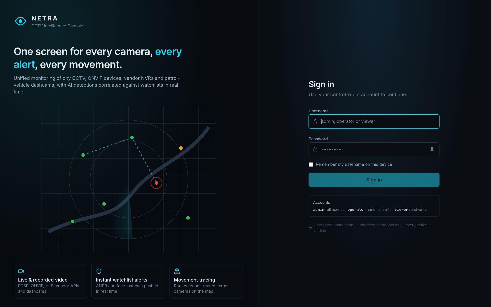
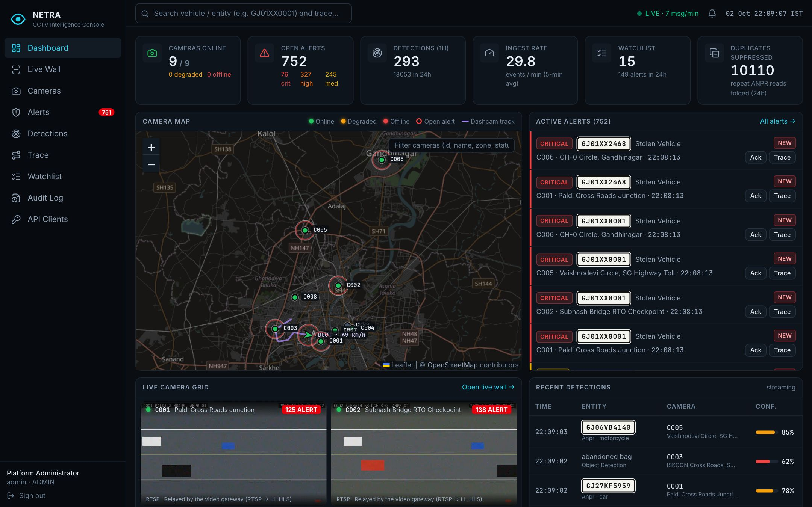
| Area | What it shows and how it stays live |
|---|---|
| KPI strip | Cameras online / total with degraded and offline counts; open alerts split by severity; detections in the last hour and 24 hours; ingest rate (events per minute, 5-minute average); watchlist size and alerts in 24 h; repeat ANPR reads suppressed in 24 h. Re-fetched whenever a real-time message arrives (throttled to once per 1.2 s) and every 30 s. |
| Camera map | Every camera as a status-coloured dot (green / amber / red / grey); a pulsing red ring when the camera has an open alert; the dashcam as an arrow pointing along its heading with its speed, plus its purple GPS trail. A filter box narrows the map, the grid and the health table. Clicking a camera opens a mini live view. |
| Active alerts | Newest open alerts with severity colour bar, plate or person reference, category, camera and time; one-click Acknowledge and Trace. |
| Live camera grid | Four live feeds (fixed cameras plus the dashcam). |
| Recent detections | Streaming table of detections; a new row flashes as it arrives over the WebSocket; watchlist hits carry a warning icon; repeat reads show "×n"; dashcam ADAS events show their description. |
| Trend & health | Detections per hour for 24 h (hover for watchlist hits); a service strip (API, database, Redis, gateway, ingest backlog, streams ready, viewers) and every camera's status, reason and last-seen time. |
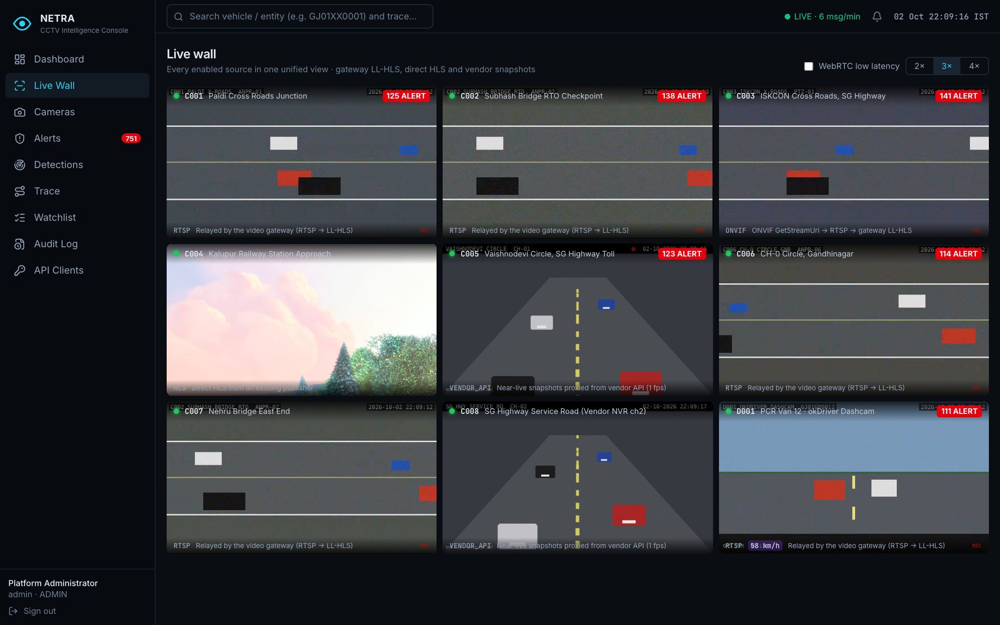
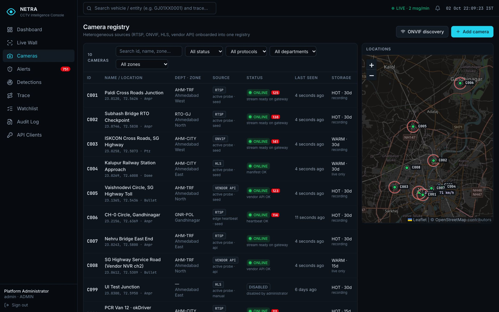
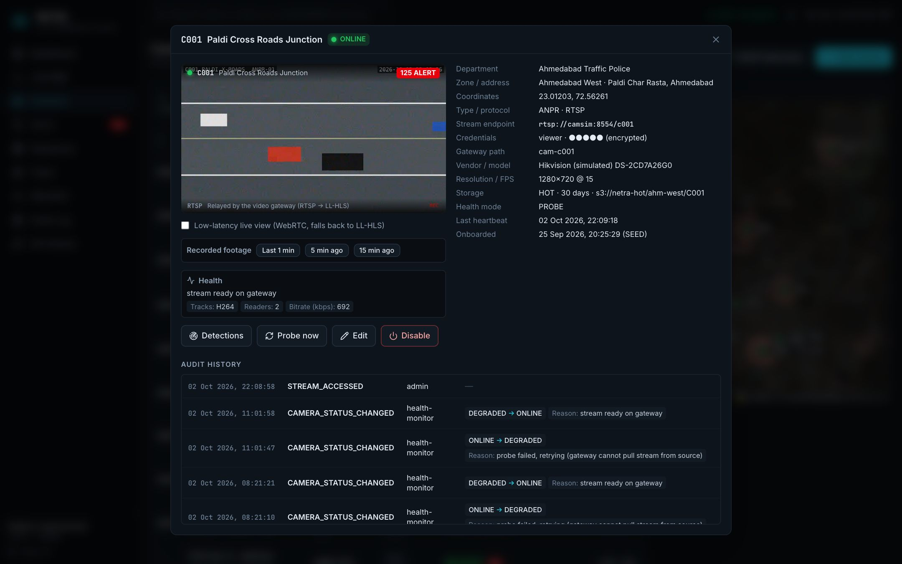
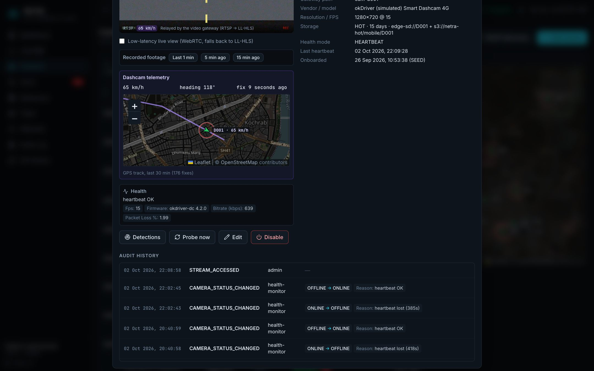
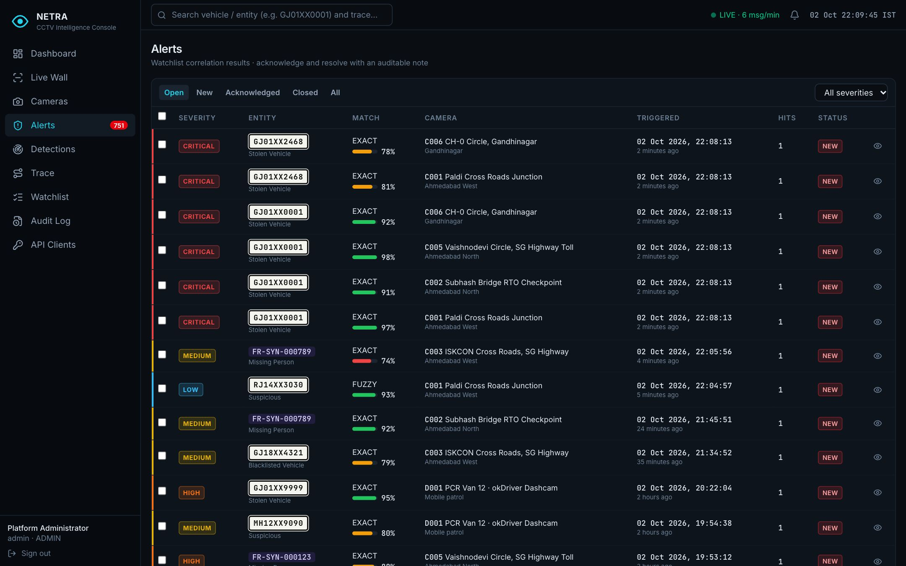
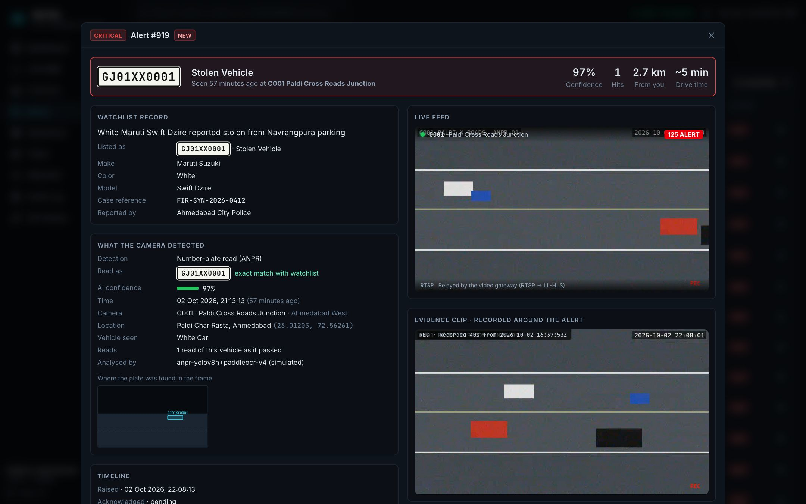
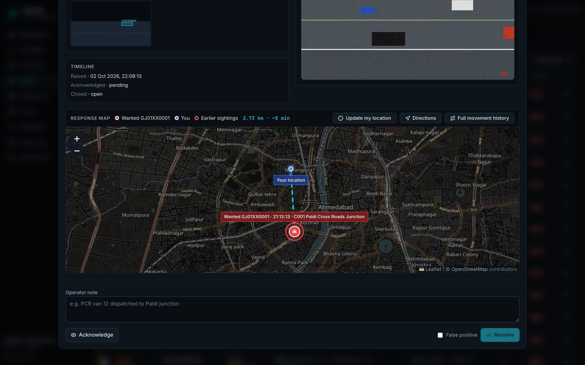
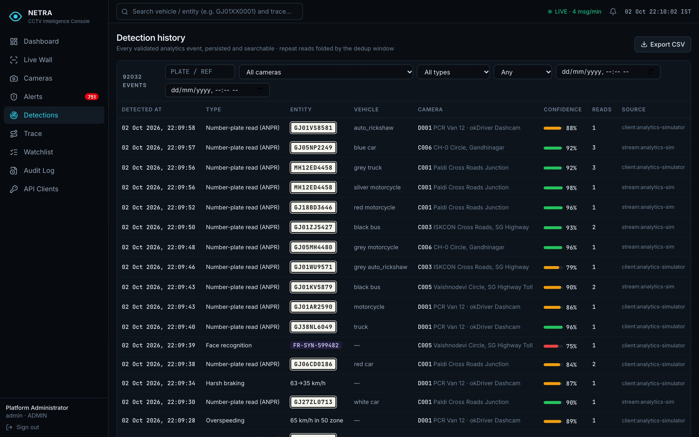
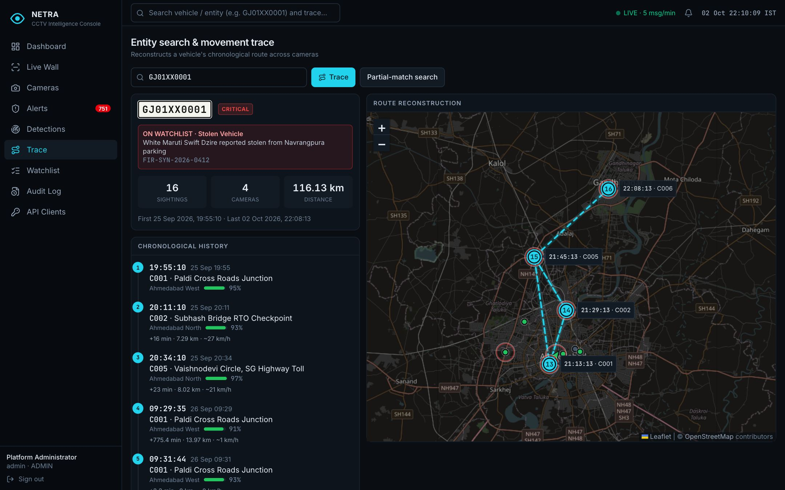
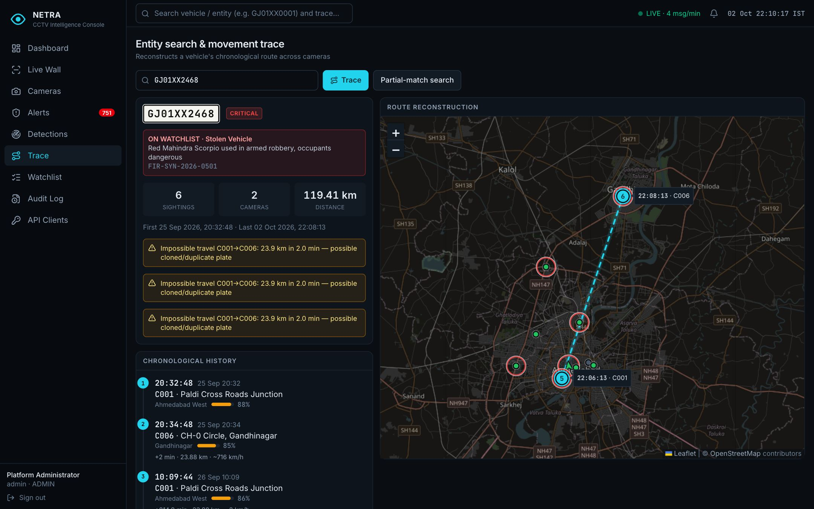
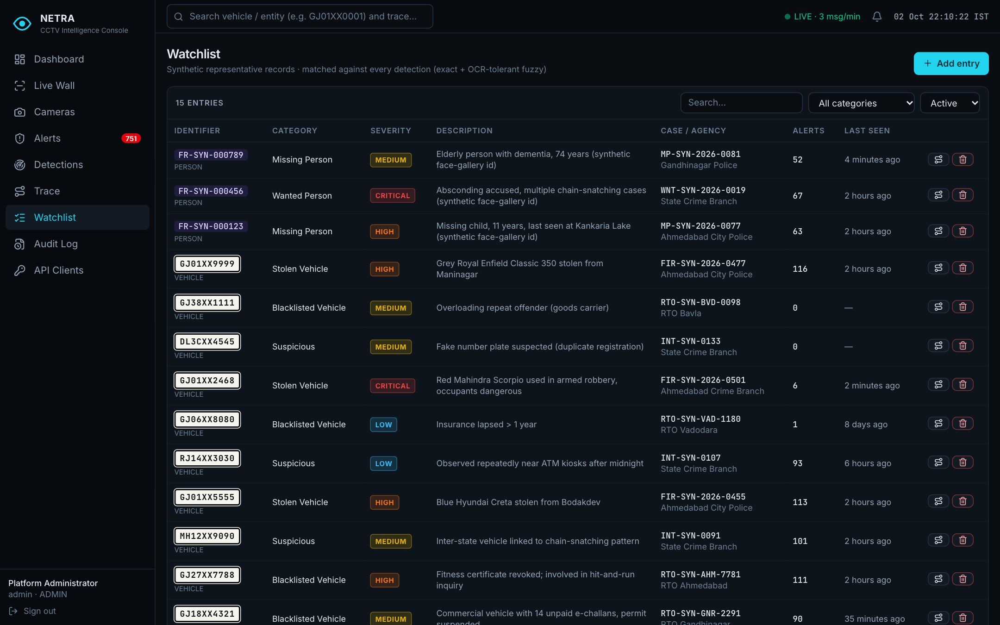
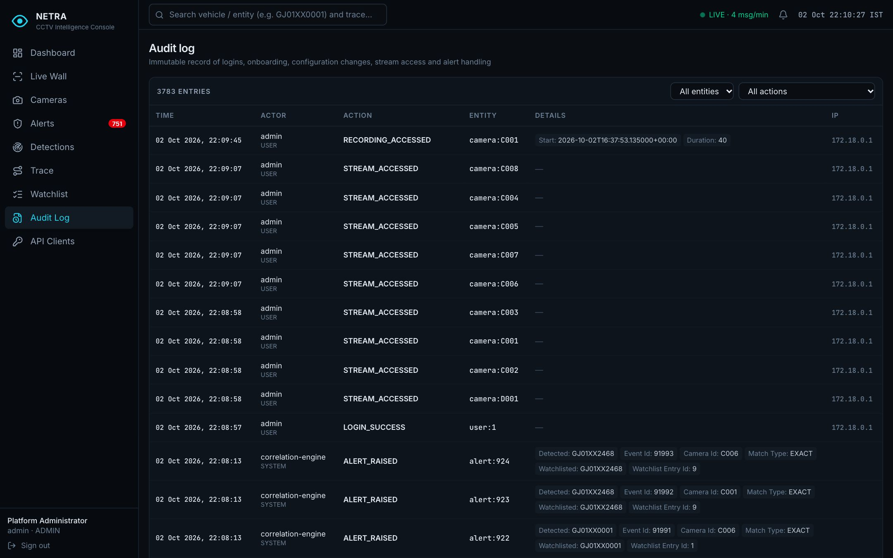
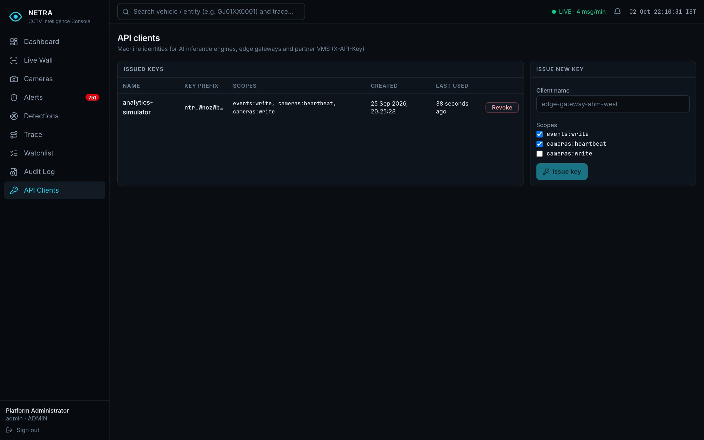
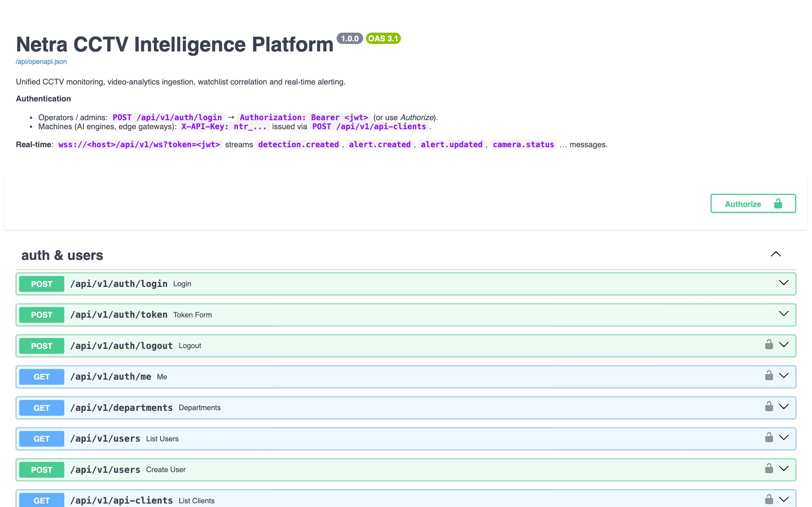
/api/docs.Docker Desktop (or Docker Engine with Compose v2), make, openssl, about 4 GB of free RAM. Nothing else is installed on the host —
every service runs in a container.
git clone https://github.com/AdityaKaushik11/netra.git && cd netra
make up # generates .env with random secrets, builds the images, starts 7 containers
open https://localhost:8443
make up runs scripts/gen-env.sh first: it copies .env.example to .env and replaces every secret with a
random value from openssl rand (database and Redis passwords, JWT secret, Fernet key, gateway secret, the three user passwords,
the simulator API key and the simulated devices' credentials), then chmod 600s the file. The first start builds four images and takes a
few minutes; after 30–60 seconds all cameras report ONLINE and simulated traffic begins.
Three users are seeded — admin, operator, viewer — with the passwords in .env. Change one at any time
(bcrypt-hashed, audited, and every existing session of that user is signed out):
docker compose exec backend python -m app.manage set-password admin
| Command | What happens |
|---|---|
| make scenario | GJ01XX0001 (stolen, CRITICAL) read at C001 → C002 → C005, timestamped like the brief's 10:02 / 10:18 / 10:41 example |
| make scenario-live | Same route plus C006, one sighting every 8 s so alerts appear one after another on camera |
| make clone | GJ01XX2468 at two cameras 24 km apart two minutes apart → impossible-travel anomaly |
| make burst | 10 repeat reads of one plate in 3 s → one stored event with repeat count 9 |
| make onboard | API-based bulk onboarding of cameras C007 and C008 (appear live, no refresh) |
| scripts/camera.sh down c002 | Stops a camera's stream → C002 turns OFFLINE within ~20 s; up c002 restores it |
| scripts/camera.sh vendor weak | Vendor NVR reports a weak signal → C005 DEGRADED; offline / online also work |
| scripts/camera.sh edge pause | Edge agent stops heartbeats → C006 DEGRADED then OFFLINE; resume restores |
| scripts/camera.sh dashcam pause | Dashcam loses 4G → D001 DEGRADED then OFFLINE |
| make logs · make ps · make down · make reset | Follow logs · list containers · stop · stop and delete all data |
| make test · make lint | Backend test suite · all linters and type checks |
The shape of the system: the components, how they connect, and how the code is organised.
Sources on the left, the platform in the middle, operators on the right. Video, API/data, AI events and control traffic travel on separate, explicitly authorised paths.
| Decision | Why | Consequence |
|---|---|---|
| A dedicated video gateway | Browsers cannot play RTSP; cameras must not be exposed; credentials must stay server-side | One component converts RTSP to LL-HLS/WebRTC, records, and serves clips; the API stays lightweight |
| Adapters per source type | Heterogeneous cameras are the core problem | Registry, health, playback and analytics never branch on vendor |
| Redis for real-time and dedup | The API must scale horizontally; dedup and rate limits must hold across replicas | Any replica serves any WebSocket; guarantees are global, not per process |
| MySQL as system of record | okDriver's stack; RDS-compatible; strong indexing for the query paths | Alembic migrations; UTC timestamps; portable schema |
| Edge proxy in front of everything | One origin for the browser; TLS; security headers; route blocking | Caddy is the only exposed component |
Where everything lives. The repository has four deployable units (backend, frontend, simulator, infrastructure) plus documentation and scripts.
| Path | Purpose |
|---|---|
| backend/app/main.py | FastAPI application factory: middleware (request id, security headers, CORS, error handler), routers, lifespan that starts the background tasks |
| backend/app/core/config.py | Every setting, read from environment variables (chapter 7) |
| backend/app/core/security.py | bcrypt passwords, JWT access and stream tokens, API-key hashing, Fernet encryption |
| backend/app/core/netguard.py · logging.py · db.py | SSRF guard for every outbound connection to a camera · structured JSON logs · async SQLAlchemy engine and sessions |
| backend/app/models/ | entities.py (9 tables), enums.py (roles, statuses, event types…), types.py (UTC datetime type, BIGINT ids) |
| backend/app/schemas/ | Pydantic request/response models with validation: auth, camera, event, alert/watchlist |
| backend/app/api/deps.py | Authentication and authorisation dependencies (users, roles, API keys, scopes, rate limits) |
| backend/app/api/routes/ | auth, cameras, events (+ search, trace), alerts, watchlist, system (stats, audit, health, metrics, WebSocket) |
| backend/app/adapters/ | base.py (interface), rtsp.py, onvif.py, http_sources.py (HLS, vendor API) |
| backend/app/services/ | ingestion, watchlist_matcher, dedup, event_bus, stream_consumer, health_monitor,
gateway, sessions, ratelimit, audit, serializers, redis_client |
| backend/app/seed.py · manage.py | Idempotent bootstrap data · operational commands (password reset) |
| backend/alembic/ | Database migrations (initial schema; dashcam telemetry) |
| backend/tests/ | 38 automated tests (chapter 27) |
| frontend/src/api/ | Fetch wrapper with auth (client.ts) and all TypeScript types (types.ts) |
| frontend/src/hooks/ | auth (session), realtime (WebSocket and cache updates), location (operator geolocation) |
| frontend/src/components/ | Layout, maps, video player, alert detail, forms, badges, error boundary (chapter 22) |
| frontend/src/pages/ | One file per screen (chapter 23) |
| simulator/sim/ | ONVIF device, vendor NVR, AI analytics engine, edge agent, dashcam, scenarios (chapter 24) |
| infra/camsim/ | Simulated IP cameras: MediaMTX + FFmpeg scenes |
| infra/gateway · infra/caddy · infra/prometheus | Video gateway configuration · HTTPS edge proxy (routes, headers, CSP, limits) · optional metrics |
| docker-compose.yml · docker-compose.prod.yml | The stack · production overrides |
| scripts/ | gen-env.sh, camera.sh, deploy-vm.sh, backup.sh, configure-vercel.sh |
| docs/ · .github/workflows/ | Architecture PDF, this handbook, API, security, scalability, deployment, demo script, requirements traceability · CI on every push |
| Container | Image | Role |
|---|---|---|
| mysql | mysql:8.4 | System of record; binary logs off, 256 MB buffer pool, 200 connections, data in a named volume |
| redis | redis:7.4-alpine | Password-protected; append-only persistence; 256 MB cap evicting only keys with a TTL |
| backend | built from backend/ | API + background tasks; runs migrations and seed at start; non-root user |
| gateway | bluenviron/mediamtx:1 | Video gateway; recordings in a named volume |
| camsim | built from infra/camsim/ | Five simulated RTSP cameras that require credentials |
| simulator | built from simulator/ | ONVIF device, vendor NVR, AI engine, edge agent, dashcam; non-root user |
| web | built from frontend/ | Caddy serving the built React console and proxying the API and video |
alembic upgrade head (creates or migrates the schema), then python -m app.seed
(idempotent: only creates what is missing), then starts uvicorn.Every container: restart: unless-stopped, no-new-privileges, a memory limit (MySQL 1 GB, backend 768 MB, camsim 768 MB, gateway
512 MB, simulator 384 MB, Redis 320 MB, web 256 MB) and rotated logs (3 × 10 MB). Application containers drop all Linux capabilities; the web container
keeps only NET_BIND_SERVICE to bind port 443. Locally all ports bind to 127.0.0.1.
How each part of the FastAPI service works — configuration, data, security, cameras, health, video, ingestion, matching, alerts, tracing, real-time delivery, statistics, retention and the complete API.
All configuration comes from environment variables (pydantic-settings); nothing secret is in the code. Defaults below are
the code defaults; Compose overrides some for the containerised stack.
| Setting (env var) | Default | Meaning |
|---|---|---|
| DATABASE_URL | sqlite (dev) | Compose sets mysql+aiomysql://netra:…@mysql:3306/netra |
| REDIS_URL | empty | Empty = in-process fallbacks (tests, single node) |
| JWT_SECRET | dev value | Signs tokens and keys API-key hashes; refused in production if left at default |
| ACCESS_TOKEN_MINUTES · STREAM_TOKEN_SECONDS | 480 · 300 | Session length · camera stream token lifetime |
| CREDENTIALS_KEY | derived (dev) | Fernet key that encrypts camera credentials |
| RATE_LIMIT_LOGIN / API / INGEST_PER_MIN | 10 · 600 · 6000 | Per IP · per user · per API key (production: login 60) |
| GATEWAY_API_URL · GATEWAY_API_SECRET | gateway:9997 · — | Gateway control API and the backend's credential for it |
| GATEWAY_PUBLIC_HLS_BASE · …PLAYBACK_BASE | /media · /playback | URL prefixes handed to browsers |
| STREAM_ON_DEMAND | false | Pull a camera only while someone watches (bandwidth saving) |
| HEALTH_INTERVAL_SECONDS | 10 | Health-monitor cycle |
| HEARTBEAT_DEGRADED_AFTER_S · …OFFLINE… | 30 · 90 | Heartbeat age thresholds |
| PROBE_TIMEOUT_S · PROBE_SLOW_THRESHOLD_S | 3 · 1.5 | Probe timeout; slower HLS manifest = DEGRADED (Compose: 6 · 3) |
| DEDUP_WINDOW_SECONDS | 60 | Repeat reads of the same identity at the same camera are folded |
| ALERT_COOLDOWN_SECONDS | 300 | Open alert for the same entity + camera is updated instead of re-raised |
| MIN_MATCH_CONFIDENCE · FUZZY_MATCH_ENABLED | 0.60 · true | Correlation thresholds |
| MAX_EVENT_AGE_HOURS · MAX_FUTURE_SKEW_SECONDS | 72 · 300 | Accepted timestamp window |
| STREAM_INGEST_ENABLED · STREAM_INGEST_KEY | true · netra:ingest:detections | Redis Stream message channel |
| EVENT_RETENTION_DAYS · POSITION_RETENTION_HOURS | 30 · 48 | Data retention |
| BLOCKED_ENDPOINT_HOSTS | platform services | Hosts that may never be used as camera endpoints |
| ONVIF_DISCOVERY_HOSTS | empty | ONVIF device URLs probed by discovery |
| API_DOCS_ENABLED · ENVIRONMENT | true · development | Swagger on/off · production safety checks |
Compose-level variables (in .env): HTTPS_PORT, BIND_ADDRESS, SITE_ADDRESS, TLS_MODE,
HSTS_MAX_AGE, EXTERNAL_MEDIA_ORIGINS, PUBLIC_IP, the data-store passwords, the three user passwords, the simulator API key,
the simulated devices' credentials, and simulator traffic settings (INGEST_MODE, SIM_EVENTS_PER_MIN, PUBLIC_HLS_URL).
DATETIME(6) (microseconds) by a custom UTCDateTime type that always returns
timezone-aware values, so no code ever compares naive and aware datetimes.C001, D001).| Column | Meaning |
|---|---|
| id | Camera id, e.g. C001; must match ^[A-Z0-9][A-Z0-9_-]{1,31}$ |
| name, zone, address, department_id | Descriptive and organisational metadata |
| latitude, longitude | Location; for a dashcam, the latest GPS fix |
| camera_type | FIXED, PTZ, ANPR, DOME, BULLET, THERMAL or DASHCAM |
| source_protocol | RTSP, ONVIF, HLS or VENDOR_API — selects the adapter |
| stream_endpoint | Endpoint reference without credentials (rtsp://…, ONVIF device-service URL, manifest URL or vendor API base) |
| stream_username, stream_secret_enc | Username in clear; password or vendor API key Fernet-encrypted; never returned by the API |
| resolved_stream_uri, gateway_path | RTSP URI discovered via ONVIF; the gateway path name (cam-c001) |
| vendor, model, resolution, fps | Device metadata |
| recording_enabled, storage_tier, storage_location, retention_days | Storage metadata; recording is applied on the gateway |
| health_mode | PROBE (platform probes the source) or HEARTBEAT (an edge device reports) |
| status, status_reason, status_changed_at | ONLINE / DEGRADED / OFFLINE / UNKNOWN, a human-readable reason and when it changed |
| last_heartbeat_at, health_metrics | Last successful probe or heartbeat; metrics such as bitrate, fps, packet loss, temperature |
| speed_kmh, heading_deg, location_updated_at | Dashcam telemetry |
| is_enabled, onboarding_source, tags | Disabled cameras keep their history; MANUAL / API / DISCOVERY / SEED |
| Column | Meaning |
|---|---|
| event_uid | Unique idempotency key — the producer's event_id, or a generated UUID |
| camera_id, event_type | Source camera; ANPR, VEHICLE/PERSON/OBJECT_DETECTION, FACE_RECOGNITION, OVERSPEED, HARSH_BRAKING, COLLISION_WARNING, DRIVER_DROWSINESS |
| detected_at, received_at | When the AI saw it (producer clock) and when the platform received it |
| identifier, identifier_normalized | Plate or person reference as read, and upper-case alphanumerics only (used for matching and search) |
| vehicle_type, vehicle_color, object_label | Enrichment from the model; ADAS descriptions live in object_label |
| confidence, bounding_box | 0–1 confidence; x, y, w, h of the detection in the frame |
| snapshot_url, model_name, source_client, attributes | Evidence link, model identity, which API client sent it, extra JSON (e.g. speed, plate-format flag) |
| latitude, longitude | Snapshot of the location at detection time — the camera's, or the dashcam's GPS fix |
| repeat_count, last_seen_at | Repeat reads folded into this event by the dedup window |
| watchlist_hit | True if this event raised or updated an alert |
| Column | Meaning |
|---|---|
| event_id, watchlist_entry_id, camera_id | What was seen, what it matched, where |
| identifier, identifier_normalized | As read by the camera (for fuzzy matches this differs from the watchlist identifier) |
| match_type, confidence, severity, title | EXACT or FUZZY; highest confidence seen; LOW–CRITICAL; human title |
| status | NEW → ACKNOWLEDGED → RESOLVED or FALSE_POSITIVE |
| latitude, longitude, triggered_at | Where and when the alert was raised |
| hit_count, last_hit_at | Further sightings at the same camera within the cool-down |
| acknowledged_by/at, resolved_by/at, resolution_note | Who handled it, when, and the operator's note |
| Table | Columns and purpose |
|---|---|
| watchlist_entries | entity_type (VEHICLE/PERSON), identifier + normalised (unique per type), category (STOLEN_VEHICLE, BLACKLISTED_VEHICLE, WANTED_PERSON, MISSING_PERSON, SUSPICIOUS), severity, description, attributes (make, colour, model, age…), case_reference, source_agency, is_active, valid_until, created_by |
| users | username (unique), full_name, bcrypt password_hash, role, department, is_active, last_login_at |
| api_clients | name, key_prefix (first 10 characters, for recognition), key_hash (HMAC-SHA256), scopes, is_active, last_used_at |
| departments | code and name (AHM-TRF, AHM-CITY, RTO-GJ, GNR-POL in the seed) |
| camera_positions | Dashcam GPS track: camera_id, recorded_at, latitude, longitude, speed, heading |
| audit_logs | created_at, actor_type (USER / API_CLIENT / SYSTEM), actor id and name, action, entity type and id, JSON details, IP address |
Every index exists for a specific query path; the complete list is in the architecture PDF (section 10). Migrations: initial schema and
dashcam telemetry (adds the speed/heading columns and the camera_positions table).
POST /auth/login {username, password}. The username is trimmed and lower-cased.429 "locked for 15 minutes" and audit LOGIN_LOCKED.LOGIN_FAILED, answer 401.last_login_at, audit LOGIN_SUCCESS, and return a JWT plus the user profile.| Token | Claims | Use |
|---|---|---|
| Access | sub (user id), role, typ=access, iat, exp (+8 h), jti (unique id) |
Sent as Authorization: Bearer on every API call and as ?token= when opening the WebSocket |
| Stream | sub, cam (one camera), typ=stream, exp (+5 min) |
Appended to video URLs; verified by the gateway through the backend for every request |
Tokens are HS256 with exp, sub and typ required. A token of the wrong type is rejected, so a stream token can never be used
as a session. On every request the backend also checks revocation: POST /auth/logout stores the token's jti in Redis until it would
have expired; a password reset stores a "revoked before" timestamp for the user, invalidating every older token. The browser keeps the token in
sessionStorage (cleared when the tab closes).
Administrators issue keys for AI engines, edge agents and dashcams (POST /api-clients). A key is ntr_ + 32 random bytes, shown once;
only its HMAC-SHA256 is stored, keyed with the server secret. Each key has explicit scopes:
| Scope | Allows |
|---|---|
| events:write | POST /events, POST /events/batch |
| cameras:heartbeat | POST /cameras/{id}/heartbeat (including GPS) |
| cameras:write | POST /cameras, POST /cameras/bulk (API-based onboarding) |
Machine requests are rate-limited per key (6,000 per minute); last_used_at is updated at most once a minute to avoid a database write per event.
| Action | Viewer | Operator | Admin | API key |
|---|---|---|---|---|
| See dashboard, cameras, video, detections, alerts, trace, watchlist | ✓ | ✓ | ✓ | — |
| Acknowledge / resolve alerts (single and bulk) | — | ✓ | ✓ | — |
| Add / edit / deactivate watchlist entries | — | ✓ | ✓ | — |
| Probe a camera now · export detections CSV | — | ✓ | ✓ | — |
| Onboard, edit, enable / disable cameras · ONVIF discovery | — | — | ✓ | cameras:write (create) |
| Users, API keys, audit log | — | — | ✓ | — |
| Post detection events | — | — | ✓ | events:write |
| Send heartbeats / GPS | — | — | ✓ | cameras:heartbeat |
rtsp://user:pass@… is refused — credentials go in separate fields); its scheme must match the protocol (RTSP →
rtsp/rtsps, the others → http/https). The SSRF guard refuses platform services, loopback and link-local addresses.stream_secret_enc.CAMERA_ONBOARDED is recorded; camera.created is pushed to every console; a health probe is scheduled immediately.Three ways in: the console form (admin), POST /cameras or POST /cameras/bulk with an API key (up to 500 cameras per call; each one
succeeds or fails on its own inside a savepoint), and ONVIF discovery, which pre-fills the form. Editing applies the same rules, refuses
null for required fields, records a field-level diff (passwords shown as "rotated"), and re-prepares the camera when its endpoint, credentials or
recording flag change. Disabling tears down the gateway path and marks the camera OFFLINE "disabled by administrator".
class CameraAdapter:
async def prepare(camera) # on onboarding/edit: register with gateway, resolve URIs
async def teardown(camera) # on disable
async def probe(camera) -> ProbeResult # status + reason + metrics
def playback(camera, token, exp) -> PlaybackInfo # how a browser renders it (never credentials)
| Adapter | prepare | probe | playback |
|---|---|---|---|
| RTSP | Builds the source URL with decrypted credentials and registers gateway path cam-<id> (recording on/off) |
Reads the gateway path state (section 11.3); re-registers it if the gateway lost it | LL-HLS URL + WebRTC (WHEP) URL + stream token |
| ONVIF | SOAP GetProfiles → GetStreamUri; stores the URI; registers the gateway path with the same credentials |
GetDeviceInformation (device alive?) then the gateway path state | As RTSP |
| HLS | — | Fetches the manifest (SSRF-checked, ≤ 3 checked redirects) | The manifest URL itself, no token (external origin) |
| Vendor API | — | GET {base}/status with X-Api-Key | Snapshot URL on the backend + stream token |
ONVIF devices speak SOAP 1.2 over HTTP and authenticate with WS-Security UsernameToken digests. For each request the client generates a 16-byte random nonce and a UTC timestamp and sends:
PasswordDigest = Base64( SHA-1( nonce + created + password ) )
so the password itself never crosses the network. Usernames and profile tokens are XML-escaped; responses are parsed with defusedxml
(immune to XML entity attacks). Discovery (POST /onvif/discover with credentials in the body) probes each configured device URL, returns
manufacturer, model, firmware, serial and stream URI, and marks devices already registered. Multicast WS-Discovery is not used because it does not
cross container or VLAN boundaries; in production discovery would run on an edge gateway.
Browsers cannot send an Authorization header from an <img> tag, so vendor cameras are viewed through
GET /cameras/{id}/snapshot?token=…. The backend checks that the stream token is valid and scoped to that camera, fetches
{base}/snapshot.jpg with the vendor key, and relays the bytes only if the response really is an image under 5 MB. The console refreshes the image
once per second — a near-live, low-bandwidth (≈ 50–80 kbps) mode suited to cameras on weak links.
The health monitor runs inside every API replica, but only one does the work: each cycle it tries to take (or renew) the Redis key
netra:leader:health-monitor with SET NX EX 30. The leader then evaluates all enabled cameras concurrently (at most 32 probes at
a time), saves results, and publishes camera.status for every camera whose status changed. A cycle runs every 10 seconds; roughly once an
hour it also runs data retention (chapter 19).
| Mode | How status is decided |
|---|---|
| PROBE | The platform actively checks the source through its adapter (11.3). A successful probe updates last_heartbeat_at. |
| HEARTBEAT | An edge device reports via POST /cameras/{id}/heartbeat (C006's edge agent every 10 s; the dashcam every 3 s with GPS).
No heartbeat yet → OFFLINE; age > 90 s → OFFLINE "heartbeat lost"; age > 30 s → DEGRADED "heartbeat late"; packet loss > 5 % or fps < 5 → DEGRADED;
otherwise ONLINE — but for a gateway camera the video is checked too, and if the gateway cannot pull it the camera is DEGRADED
"heartbeat OK, video unavailable". A heartbeat only revives an OFFLINE/UNKNOWN camera immediately; every other transition is decided by the monitor,
so the two paths never fight. |
| Source | ONLINE | DEGRADED | OFFLINE |
|---|---|---|---|
| RTSP / ONVIF | Gateway path ready and inbound bitrate ≥ 40 kbps (bytes received between two probes) | Ready but bitrate below 40 kbps | Path missing (re-registered automatically) or gateway cannot pull the source; ONVIF device unreachable or rejects credentials. Gateway itself unreachable → UNKNOWN |
| HLS | Manifest 200 with #EXTM3U | Manifest slower than the threshold | Unreachable, non-200 or not a manifest |
| Vendor API | online: true | Weak signal or fps < 5 | Unreachable, credentials rejected, or online: false |
A single failed probe of a healthy camera does not turn it red. In PROBE mode the first OFFLINE result of an ONLINE/DEGRADED camera is recorded as
DEGRADED "probe failed, retrying"; only the second consecutive failure makes it OFFLINE. Recovery is immediate. Every change is audited
(CAMERA_STATUS_CHANGED with from, to and reason), timestamped, exported as the Prometheus gauge netra_cameras{status}, and
pushed to every console, which shows a toast ("C002 went OFFLINE") and recolours the marker.
MediaMTX pulls each registered RTSP source over TCP and serves it in three ways: LL-HLS (Low-Latency HLS: 1-second segments split into 200 ms parts, seven segments kept, about 1–2 s glass-to-glass), WebRTC through the WHEP protocol (sub-second), and recording to fragmented MP4 (60-second segments, deleted after 6 hours) served back as MP4 clips by its playback server. Its control API (port 9997) registers paths; its metrics are on 9998.
The gateway is configured with authMethod: http: for every read, playback and API request it calls
POST /api/v1/internal/media-auth on the backend with the action, path, query string and any credentials. The backend allows:
cam- + lower-cased camera id);netra-backend and GATEWAY_API_SECRET (constant-time comparison);/api/v1/internal/* from outside.| Mode | How the console plays it |
|---|---|
| LL-HLS | hls.js in low-latency mode (live sync 2 parts, 10 s back-buffer). Its request hook re-opens each same-origin request with
?token=… appended, so the token reaches the playlist, parts and segments but is never sent to a third-party origin. On a fatal error it retries
every 5 s. Tokens are renewed every ~3.3 minutes without restarting playback. |
| WebRTC | Creates an RTCPeerConnection with a receive-only video transceiver, gathers ICE candidates for up to 1.5 s, POSTs the SDP offer
to /webrtc/cam-…/whep?token=…, applies the answer. If it is not connected within 8 s it falls back to LL-HLS automatically. The session is
DELETEd when the player closes. |
| Snapshots | An <img> refreshed every second from the snapshot proxy (10.4). |
| Recorded clip | GET /cameras/{id}/clip?start&duration returns a playback URL such as
/playback/get?path=cam-c001&start=…&duration=40&format=mp4 plus a token; the browser plays the MP4 in a normal
<video> element. Each request is audited as RECORDING_ACCESSED. |
Opening a live view is audited as STREAM_ACCESSED once per user per camera per 10 minutes — enough to answer "who watched this camera
and when" without recording every token renewal.
The same function, ingestion.ingest(), serves POST /events, every item of POST /events/batch and every message
from the Redis Stream.
person_ref; GPS latitude and longitude together or not at all;
attributes under 4 KB; snapshot URL http(s) or relative. Errors return 422 with the failing field.event_id that is already stored, answer 200 duplicate with the original event id.
A producer can therefore retry safely after a timeout.SET netra:dedup:{camera}:{type}:{identity} <event_uid> NX EX 60 in Redis.
If the key already exists, another read of the same vehicle at the same camera arrived within 60 s: the original event's repeat_count is
incremented, last_seen_at moves forward, the higher confidence is kept, and the answer is 200 suppressed. Because the key lives in
Redis this works across replicas.plate_format_valid flag (Indian GJ01AB1234 or BH-series pattern); a dashcam's speed is
stored in attributes.detection.created, alert.created and
alert.updated published — consoles never see data that does not exist. The answer is 201 created with the event id and alert ids.Batch (≤ 500 events) exists for edge gateways that buffer during a network outage: each event is processed independently and the response lists
each result plus totals (created, duplicates, suppressed, rejected). Because of idempotency, replaying a buffer after reconnecting is safe.
Stream: producers XADD netra:ingest:detections * payload <json> client <name>; chapter 17 explains how the consumer group
processes it.
| Input | Result |
|---|---|
10 reads of one passing vehicle within 3 s (make burst) | 1 event, repeat_count = 9 (1 × 201, 9 × 200 suppressed) |
The same event_id posted twice | One row; second answer 200 duplicate with the same id |
| Unknown camera / naive timestamp / confidence 1.7 / timestamp 1 h ahead | 404 / 422 / 422 / 422 |
| Watchlisted plate at confidence 0.3 | Stored, no alert |
Metrics: netra_events_total{event_type,result}, netra_alerts_total{severity,match_type} and the latency histogram
netra_ingest_seconds.
Both watchlist identifiers and detections are normalised the same way: upper-case, then every character that is not A–Z or 0–9 removed.
gj 01 xx-0001, GJ01 XX 0001 and GJ01XX0001 are the same plate.
Matching runs on every detection, so it cannot query the database each time. The matcher keeps all active entries in memory:
The index is rebuilt when the watchlist changes or after 5 minutes. Every add, edit or deactivation increments the Redis counter
netra:watchlist:version; each replica compares it with the version it loaded before matching, so no replica uses a stale list for more than
one event. Entries past valid_until never match.
ANPR makes predictable OCR mistakes: 0↔O, 8↔B, 5↔S, 1↔I, a dropped or extra character. Netra treats a read as a
possible match if it is within edit distance 1 (one substitution, insertion or deletion) of a watchlisted plate of at least 6 characters.
Comparing each read with every entry would cost O(watchlist size). Instead, for every entry the index stores the plate itself and every string obtained by
deleting one character. For a read, the same deletions are generated; any entry that shares a key is a candidate, and candidates are confirmed with an
exact edit-distance-1 check. The cost is proportional to the plate length (about 10 lookups), not to the size of the watchlist.
Watchlist entry GJ05XX1234 deletions include GJ05XX134 (deleted "2") Camera read GJ05XX1Z34 deletions include GJ05XX134 (deleted "Z") shared key "GJ05XX134" → candidate → one substitution (2→Z) → FUZZY match
Fuzzy matches are labelled possible match, lowered one severity level (CRITICAL → HIGH, HIGH → MEDIUM…), and the alert view shows both the read and the watchlisted plate so the operator can verify visually. Exact matches always win: if an exact match exists, fuzzy matching is not attempted. Persons (face-recognition gallery references) are matched exactly only.
For every match the pipeline first looks for an open alert (NEW or ACKNOWLEDGED) for the same watchlist entry at the same camera whose last hit is
within the cool-down (300 s). If one exists it is updated — hit_count + 1, last_hit_at, best confidence — and
alert.updated is published. Otherwise a new alert is created with the entry's severity (lowered for fuzzy matches), the event's location, a
title such as "Stolen vehicle GJ01XX0001 at Paldi Cross Roads Junction", ALERT_RAISED is audited by the system actor
correlation-engine, and alert.created is published. A vehicle that keeps sitting in front of one camera therefore produces one
alert with a growing hit count; the same vehicle at a different camera produces a new alert, because that is new information.
| Action | Rules |
|---|---|
| Acknowledge | Only from NEW (409 otherwise); optional note; records who and when; audited ALERT_ACKNOWLEDGED |
| Resolve | From NEW or ACKNOWLEDGED; note of at least 3 characters required; false_positive flag chooses FALSE_POSITIVE; an
unacknowledged alert is acknowledged at the same moment; audited ALERT_RESOLVED |
| Bulk | POST /alerts/bulk with a list of ids or "all open alerts older than N minutes"; up to 5,000; each alert audited individually |
The toast (CRITICAL stays 20 s, others 10 s) and a synthesised alarm tone (three beeps for CRITICAL, two for HIGH, one otherwise; can be muted) link straight to the alert and to the trace. The alert view assembles the watchlist record, the event, the camera, the trace and the recording, and adds two automatic checks: a colour mismatch warning when the vehicle colour seen differs from the watchlist record (a possible false plate), and a non-standard plate format warning from the ingestion flag.
The browser's Geolocation API supplies the operator's position (the site allows geolocation for itself only); if it is denied or unavailable the map uses the Ahmedabad control room (Shahibaug) and says so. The wanted vehicle is placed at its latest sighting — which may be newer than the alert. Distance is the great-circle distance; the drive time assumes 30 km/h city traffic. "Directions" opens Google Maps with both points; up to six sightings from the previous two hours are drawn as numbered dots.
GET /search?q= returns three groups: detected entities whose normalised identifier contains the text (with number of detections, cameras and
last seen), watchlist entries containing it, and cameras whose id or name contains it. Input that normalises to nothing (for example --)
does not match the whole watchlist. The top bar's search box jumps straight to a trace.
GET /trace/{identifier} loads the 2,000 most recent sightings of the normalised identifier (optionally within a time range), sorts them
oldest first and computes, for each stop: minutes since the previous sighting, the great-circle (haversine) distance, and the implied speed.
d = 2 · 6371 km · asin( √( sin²(Δφ/2) + cos φ₁ · cos φ₂ · sin²(Δλ/2) ) ) speed = d / Δt
If two consecutive sightings are more than 1 km apart and either share a timestamp or imply a speed above 160 km/h, the trace adds the anomaly "Impossible travel A→B: x km in y min — possible cloned/duplicate plate". The response also includes the first and last sighting, totals and, if the identity is on the watchlist, its record and number of alerts. The console draws the stops as a numbered dashed route on the map.
The console opens wss://<host>/api/v1/ws?token=<access token>. The server verifies the token (and that it is not revoked) and that the user is
active — otherwise it closes with code 4401 — then sends {"type":"hello"}. The client sends ping every 25 s and receives
{"type":"pong"}; a socket silent for 90 s is closed. Every message has the shape {"type", "ts", "data"}:
| type | data | Console reaction |
|---|---|---|
| detection.created | event | Added to the live detections feed; KPIs, history and charts refreshed |
| alert.created | alert | Toast, sound, alert queues, camera markers, trace and watchlist refreshed |
| alert.updated | alert / {bulk} | Queues and markers refreshed |
| camera.status | camera | Toast for OFFLINE / DEGRADED / back ONLINE; map and health refreshed |
| camera.location | id, lat, lng, speed, heading, at | Dashcam marker moved and trail extended in place (no re-fetch) |
| camera.created / updated / bulk_created | camera / {ids} | Registry and map refreshed |
| watchlist.changed | {id, action} | Watchlist refreshed |
On the server, event_bus.publish() sends every message to the Redis channel netra:realtime; every replica subscribes and delivers
to its own sockets, dropping any socket that does not accept a message within 2 s. If Redis publishing fails the replica still delivers locally. On the
client, cache invalidations are batched (one flush per 1.2 s), and after a reconnect (exponential back-off up to 15 s) everything is re-fetched once
to catch up.
Each replica joins the consumer group netra-ingest on the stream netra:ingest:detections (consumer name = host name) and reads
up to 100 messages at a time, blocking for at most 1 s. For each message it parses and validates the payload and runs the same ingestion pipeline; it then
acknowledges the message (XACK). Invalid messages are copied to the dead-letter stream netra:ingest:dlq (capped at 10,000) with the
error, then acknowledged. Messages that fail for any other reason (for example the database is briefly down) are not acknowledged; every 30 s the
consumer claims messages that have been pending for more than 60 s (XAUTOCLAIM) — including those of a replica that crashed — and retries them.
This gives at-least-once delivery; idempotency makes it effectively exactly-once.
GET /stats/overview computes, in one call: cameras by status (enabled only) plus disabled and total; open alerts by severity, NEW alerts and
alerts in 24 h; events in the last 5 minutes, hour and 24 hours, events per minute, and repeat reads suppressed in 24 h; active watchlist size and the
matcher's cached size; WebSocket clients on this replica; and the platform's own service health (API, database, Redis, ingest backlog from the consumer
group's pending + lag, gateway reachability, ready streams and viewers — cached for 5 s). GET /stats/timeseries?hours=24 returns hourly
detections, watchlist hits and alerts.
| Endpoint | Purpose |
|---|---|
| /api/health | Liveness: the process answers (used by Docker's health check) |
| /api/ready | Readiness: database and Redis reachable (503 otherwise) |
| /api/metrics | Prometheus metrics; internal only (blocked at the proxy) |
Twenty-one actions are recorded, each with the actor (user, API client or system), the entity, readable details and the client IP:
| Area | Actions |
|---|---|
| Sessions | LOGIN_SUCCESS, LOGIN_FAILED (with consecutive failures), LOGIN_LOCKED, LOGOUT, PASSWORD_RESET |
| Users & keys | USER_CREATED, API_CLIENT_CREATED, API_CLIENT_REVOKED |
| Cameras | CAMERA_ONBOARDED, CAMERA_UPDATED (field-level diff, secrets masked), CAMERA_ENABLED, CAMERA_DISABLED, CAMERA_STATUS_CHANGED |
| Video | STREAM_ACCESSED, RECORDING_ACCESSED |
| Alerts | ALERT_RAISED, ALERT_ACKNOWLEDGED, ALERT_RESOLVED |
| Watchlist | WATCHLIST_ADDED, WATCHLIST_UPDATED, WATCHLIST_DEACTIVATED |
No endpoint updates or deletes audit records, and retention never prunes them.
A platform that runs for months must not fill its disk. Retention is automatic.
| Data | Kept for | Mechanism |
|---|---|---|
| Detection events | 30 days | Hourly job deletes older events in batches of 5,000 — except events referenced by an alert, which are evidence |
| Dashcam GPS points | 48 hours | Same hourly job |
| Recordings | 6 hours | Gateway recordDeleteAfter |
| Alerts, watchlist, users, audit | Indefinitely | Never pruned |
| Redis | By TTL | Dedup keys 60 s, rate windows 1 min, lockouts 15 min, revocations until token expiry; streams length-capped |
| Container logs | 30 MB / container | Docker rotation 3 × 10 MB |
| MySQL binary logs | None | Disabled (single server; backups instead) |
| Backups (server) | 7 days | Nightly mysqldump --single-transaction, gzipped |
Base path /api/v1; JSON; OpenAPI at /api/docs. Lists return {items, total, limit, offset}; errors
{"detail": …}. "any" = any signed-in user.
| Method | Path | Access | Purpose |
|---|---|---|---|
| POST | /auth/login · /auth/token | public | Sign in (JSON / OAuth2 form for Swagger) |
| POST | /auth/logout | any | Revoke the current token |
| GET | /auth/me · /departments | any | Current user · departments |
| GET · POST | /users | admin | List · create users |
| GET · POST | /api-clients | admin | List · issue API keys |
| POST | /api-clients/{id}/revoke | admin | Revoke a key |
| GET | /cameras?q&status&department_id&zone&protocol&camera_type&enabled | any | Search / filter the registry |
| POST | /cameras · /cameras/bulk | admin · cameras:write | Onboard one · up to 500 |
| GET · PATCH | /cameras/{id} | any · admin | Read · edit / enable / disable |
| GET | /cameras/zones · /cameras/{id}/audit | any | Zones · camera audit history |
| POST | /cameras/{id}/heartbeat | cameras:heartbeat | Edge heartbeat with metrics and optional GPS |
| GET | /cameras/{id}/track?minutes | any | Dashcam GPS track |
| POST | /cameras/{id}/probe | operator | Probe now |
| GET | /cameras/{id}/playback | any | Live-view descriptor + stream token |
| GET | /cameras/{id}/snapshot?token | stream token | Vendor snapshot proxy |
| GET | /cameras/{id}/recordings · /clip?start&duration | any | Recorded segments · MP4 clip descriptor |
| POST | /onvif/discover | admin | ONVIF discovery (credentials in body) |
| POST | /events · /events/batch | events:write · admin | Ingest one · up to 500 |
| GET | /events?camera_id&event_type&identifier&since&until&watchlist_hit&min_confidence | any | Detection history |
| GET | /events/{id} · /events/export.csv | any · operator | One event · CSV (≤ 50,000 rows) |
| GET | /search?q · /trace/{identifier} | any | Search · movement history |
| GET · POST | /watchlist | any · operator | List · add |
| PATCH · DELETE | /watchlist/{id} | operator | Edit · deactivate |
| GET | /alerts?status&severity&camera_id&identifier&since · /alerts/{id} | any | Alert queue · detail |
| POST | /alerts/{id}/acknowledge · /resolve · /alerts/bulk | operator | Alert workflow |
| GET | /stats/overview · /stats/timeseries | any | Dashboard statistics |
| GET | /audit | admin | Audit log |
| WS | /ws?token | any | Real-time channel |
| GET | /api/health · /api/ready | public | Liveness · readiness |
POST /api/v1/events
X-API-Key: ntr_…
{ "event_id": "edge-42-000187", "camera_id": "C001", "event_type": "ANPR",
"timestamp": "2026-10-02T10:02:11+05:30", "vehicle_number": "GJ 01 XX 0001",
"confidence": 0.94, "vehicle_type": "car", "vehicle_color": "white",
"bounding_box": {"x": 412, "y": 388, "w": 176, "h": 44} }
201 Created
{ "status": "created", "event_id": 91988, "event_uid": "edge-42-000187", "alert_ids": [919] }
WebSocket → every console:
{ "type": "alert.created", "ts": "…", "data": { "id": 919, "identifier": "GJ01XX0001",
"severity": "CRITICAL", "match_type": "EXACT", "camera_id": "C001", "title": "Stolen vehicle GJ01XX0001 at Paldi Cross Roads Junction", … } }
How the React console is built: data flow, real-time updates, the video and map components, and every page.
| Concern | Choice and how it is used |
|---|---|
| Framework | React 19 with TypeScript in strict mode, built by Vite; routing with React Router 7 |
| Server state | TanStack Query: every screen reads through cached queries (keys such as ["cameras", filters],
["alerts", …], ["overview"]); data is considered fresh for 10 s; mutations invalidate the affected keys |
| API client | api() wraps fetch: prefixes /api/v1, adds the bearer token, serialises JSON, turns FastAPI
validation errors into readable messages, and calls the sign-out handler on a 401 |
| Session | AuthProvider: token in sessionStorage, current user, login, logout (revokes server-side),
can(...roles) used to show or hide actions |
| Real-time | RealtimeProvider owns one WebSocket per tab (chapter 17), keeps the last 80 detections, plays alert tones, shows toasts,
updates the dashcam position directly in the query cache, and batches invalidations |
| Styling | Tailwind CSS 4 with a design-token theme (ink greys, cyan accent, status and severity colours); component classes
(panel, input, btn, plate, data table) in index.css |
| Libraries | Leaflet + react-leaflet (maps), hls.js (video), Recharts (trend chart), sonner (toasts), lucide (icons), date-fns; fonts bundled locally (Inter, JetBrains Mono) |
| Resilience | An error boundary around the whole app shows "Something went wrong" with Try again / Reload instead of a blank page; routes are protected (unauthenticated → login; non-admin → dashboard for admin pages) |
A screen reads data through a query; the server pushes a WebSocket message when something changes; the real-time provider invalidates (or directly patches) the matching queries; the screen re-renders with fresh data — no polling loops and no page refreshes.
| Component | What it does |
|---|---|
| Layout | Sidebar navigation (admin-only items hidden for others; NEW-alert badge), top bar with entity search, live-connection indicator ("LIVE · n msg/min" or "RECONNECTING"), sound mute, IST clock and the routed page |
| VideoPlayer | Asks /playback for a descriptor and renders HlsView, WhepView (with automatic HLS fallback) or SnapshotView; overlays
camera id, name, status, open-alert count, transport and dashcam speed; refreshes the stream token every 200 s |
| ClipPlayer | Asks /clip for a recorded window and plays the MP4 with controls |
| CameraMap | Leaflet map that fits all cameras (or a trace route): status dots, pulsing ring for open alerts, heading arrow for dashcams, purple GPS trails, numbered route stops with times |
| OsmTiles | OpenStreetMap base layer darkened with a CSS filter; tiles alone send the site origin as referrer (OSM's usage policy) |
| ResponseMap | Operator position (with accuracy circle) and the wanted vehicle's latest sighting, a dashed line between them, earlier sightings |
| AlertDetail | The full incident view (section 15.3–15.4), plus acknowledge / resolve with note |
| AlertToast | Severity-coloured toast with plate, category, camera, time, confidence, case reference, "Open alert" and "Trace movement" |
| CameraForm | Create / edit camera with protocol-specific hints; password field never pre-filled ("leave blank to keep") |
| DetailsView | Turns audit and metric JSON into readable chips ("DEGRADED → ONLINE", "Packet Loss %: 0.7") |
| Badges | Status, severity, alert-status and protocol badges; number-plate styling; confidence bar |
| useMyLocation | Browser geolocation with permission handling and the control-room fallback |
| Page | Route | Behaviour |
|---|---|---|
| Login | /login | Section 2.1; redirects to the dashboard once signed in |
| Dashboard | / | Section 2.2; camera filter applies to map, grid and health table; dashcam trails loaded per dashcam |
| Live wall | /wall | All enabled cameras; 2/3/4 columns; WebRTC toggle remounts players in low-latency mode |
| Cameras | /cameras | Paged registry with five filters and a map; ?focus=ID opens the camera detail modal (live view, WebRTC toggle, recorded
replay, dashcam telemetry and track, health, actions, audit); "Add camera" and "ONVIF discovery" for admins |
| Alerts | /alerts | Five tabs, severity filter, paging, multi-select bulk actions; ?focus=ID opens AlertDetail; new alerts flash red |
| Detections | /events | Filters including a date-time range; CSV export (operators); clicking a row opens its trace |
| Trace | /trace/:id | Exact trace with map; "Partial-match search" lists entities, watchlist entries and cameras containing the text |
| Watchlist | /watchlist | Search, category and active filters; add entry (vehicle or person); deactivate; jump to trace |
| Audit log | /audit | Admins only; filter by entity type and action; refreshes every 15 s |
| API clients | /api-clients | Admins only; issue a key with scopes (shown once with a copy button); revoke |
The simulated city that exercises the platform with real protocols, and the infrastructure configuration that runs it.
The brief allows simulated sources. They are built to speak the real protocols, so the platform code is the code that would talk to real cameras and models.
| Simulator | What it is |
|---|---|
| camsim (RTSP cameras) | A MediaMTX instance that requires credentials to read, fed by FFmpeg. Each stream (c001, c002,
c003, c006, d001) is a generated CCTV-style scene — road, lane markings, moving vehicles, sensor noise — with an on-screen
display of the camera id, location and live IST clock; the dashcam stream is a forward-facing road view. H.264 baseline, 960×540, 700 kbps. Dropping
<stream>.mp4 into samples/ replaces a scene with real footage. |
| ONVIF device | SOAP 1.2 endpoint that verifies WS-Security digests exactly like a real camera and answers GetDeviceInformation, GetProfiles and
GetStreamUri (pointing to rtsp://camsim:8554/c003) |
| Vendor NVR API | REST channels 1 and 2 with /status and /snapshot.jpg (rendered with Pillow: perspective road, moving
vehicles, OSD, blurred when the signal is weak) behind an API key; /simulate?state=online|weak|offline drives health demos |
| Public HLS | A public test stream stands in for an existing municipal VMS (C004) |
| Producer | Behaviour |
|---|---|
| AI analytics engine | About 20 vehicles per minute (10 in production) over C001, C002, C003, C005, C006. Each vehicle is read 1–4 times within a couple of seconds (exercising dedup). 0.8 % are watchlisted plates, 30 % of those with an injected OCR error (exercising fuzzy matching). 4 % of cycles add a face-recognition event (10 % of them watchlisted persons); 5 % add a person or object detection with matching labels. Delivery is "mixed": half over REST with retries and stable event ids, half over the Redis Stream. |
| Edge agent | Heartbeats for C006 every 10 s with fps, bitrate, packet loss, uptime, temperature and firmware; can be paused |
| Dashcam (D001) | Drives a 12-junction patrol loop through Ahmedabad West, ticking every 3 s at 4× real time, speed varying 0–72 km/h. Each tick: a GPS heartbeat; a 45 % chance of an ANPR read of surrounding traffic at its current position (0.4 % watchlisted); ADAS rules — overspeed above 60 km/h in a 50 zone, harsh braking (3 %, a 25–35 km/h drop), collision warning (1.5 %), drowsiness (0.8 %) |
Four departments; three users; the analytics-simulator API client with all three scopes; cameras C001–C006 and D001 across Ahmedabad and
Gandhinagar; 15 synthetic watchlist entries (12 vehicles using the reserved "XX" series, 3 persons with FR-SYN references); and a day of
history (420 detections and four handled alerts) so a fresh install has meaningful charts. The seed is idempotent and never overwrites existing data.
API on 9997, metrics on 9998, RTSP 8554, LL-HLS 8888 (always remux, 7 × 1 s segments, 200 ms parts), WebRTC 8889 with media on 8189 UDP/TCP
(advertising PUBLIC_IP in production), playback server 9996, recording defaults (fMP4, 1 s parts, 60 s segments, 6 h), and the HTTP auth hook
to the backend with only metrics excluded.
| Route | Handling |
|---|---|
| /api/* | Internal paths and metrics answer 404; bodies ≤ 2 MB; proxied to the backend (WebSockets included) |
| /media/* | Prefix stripped, proxied to gateway LL-HLS; redirects rewritten back under /media |
| /webrtc/* | Bodies ≤ 64 KB; proxied to gateway WebRTC; redirects rewritten |
| /playback/* | Proxied to the gateway playback server |
| everything else | The React build with SPA fallback and the strict Content-Security-Policy |
Headers on every response: HSTS (one year in production, zero on localhost), nosniff, X-Frame-Options: DENY,
Referrer-Policy: no-referrer, Cross-Origin-Opener-Policy, a restrictive Permissions-Policy, and no Server
header. TLS: Caddy's internal CA on localhost, automatic Let's Encrypt for a real domain.
docker-compose.yml defines the stack (chapter 6). docker-compose.prod.yml overrides it for a public server: production mode, ports
80/443 and 8189, no backend port, one-year HSTS, public WebRTC address, gentler simulated traffic, higher login rate limit (all users arrive through a
few proxy IPs on Vercel). Scripts: gen-env.sh (secrets), camera.sh (outage simulation), deploy-vm.sh (one-command server
install), backup.sh (nightly dump), configure-vercel.sh (point the Vercel console at a backend).
How the platform is secured, tested, deployed, scaled and kept running — and what is left to do.
Defence in depth: each layer assumes the one in front of it may fail.
| Threat | Defence |
|---|---|
| Password guessing | Per-IP rate limit, per-account lockout (5 failures → 15 min), bcrypt cost 12, constant-time path for unknown users |
| Stolen session token | 8-hour expiry; server-side revocation on logout and password change; token kept in sessionStorage; strict CSP against script injection |
| Privilege escalation | Role check on every route; wrong token type rejected; API keys limited to explicit scopes |
| Camera credential leak | Fernet encryption at rest; never serialised; inline URL credentials refused; credentials injected only by the gateway |
| Unauthorised video access | Every HLS / WebRTC / recording request verified by the backend against a 5-minute, single-camera token |
| Reconfiguring streams | Gateway control API requires the backend's secret |
| SSRF via camera endpoints | Platform hosts, loopback, link-local (incl. cloud metadata), multicast and reserved addresses refused when saved and after DNS resolution before every request, including each redirect hop; snapshot proxy relays images only |
| Malicious XML | defusedxml for all ONVIF responses |
| Oversized / malformed input | Length limits on every field; request-body limits at the proxy; strict schemas; generic 500 responses |
| Clickjacking, sniffing, referrer leaks | Frame denial, nosniff, no-referrer (map tiles send origin only), COOP |
| Exposed services | Localhost-only binding by default; data tier unpublished; internal paths blocked; three segmented networks |
| Container breakout impact | Non-root users, all capabilities dropped, no-new-privileges, memory limits |
| Secrets in Git | .env ignored and generated randomly; staged files scanned against real secrets before commits |
| Vulnerable dependencies | Pinned versions; pip-audit and npm audit report 0 known vulnerabilities |
| Repudiation | Append-only audit log of every important action with actor and IP |
Accepted risks: lockout can be abused to lock an account for 15 minutes (production would use SSO with MFA); map tiles reveal the viewed area to OpenStreetMap (self-host tiles for air-gapped use); environment variables are visible to host administrators (use a secrets manager in production).
38 automated tests run against an in-memory configuration (SQLite, no Redis, gateway disabled) in about 10 seconds.
| File | What it proves |
|---|---|
| test_auth_cameras.py | Bad passwords rejected; authentication required; onboarding hides credentials and is audited; inline credentials and wrong schemes refused; API-key bulk onboarding with per-item errors; viewers cannot modify; disabling is audited; playback tokens are camera-scoped and the media-auth hook enforces it |
| test_ingestion.py | Validation errors (unknown camera, confidence, naive and future timestamps); idempotent retries; repeat reads folded; watchlist match raises an alert with cool-down; fuzzy match lowers severity; low confidence does not alert; acknowledge / resolve workflow and role checks; trace order and impossible travel; batch and statistics; bulk resolve |
| test_dashcam.py | GPS heartbeats move the camera and build a track; events and alerts are geolocated where the van was; ADAS events stored; half a GPS fix rejected; clips refused for non-recordable cameras |
| test_security.py | Account lockout; server-side logout; forged and wrong-type tokens; seven SSRF payloads; private camera networks still allowed; API-key scope validation; over-long passwords; security headers |
| test_retention.py | Old events pruned, alert evidence kept |
| test_matcher.py | Edit-distance-1 logic: substitution, insertion, deletion, trailing insertion, non-matches |
CI (GitHub Actions, on every push): backend lint (Ruff), format check and tests; simulator lint and compile; frontend ESLint and production build (TypeScript strict); and a build of every Docker image. Beyond unit tests, every change during development was verified against the running stack with a headless browser (pages, real-time updates, video playback, WebRTC, recordings, maps) and live API checks (token scoping, blocked routes).
| Option | How |
|---|---|
| Local | make up → https://localhost:8443. Trust Caddy's local root certificate once to avoid the browser warning. |
| Public link from this machine | Cloudflare quick tunnel (free, no account):
cloudflared tunnel --url https://localhost:8443 --no-tls-verify --http-host-header localhost --origin-server-name localhost;
available while the machine is on; the address changes on restart. |
| Always-on server | Any Ubuntu VM (x86 or ARM; e.g. a free-tier cloud VM): scripts/deploy-vm.sh <repo> <email> installs Docker,
swap, firewall rules, automatic updates, sets SITE_ADDRESS=<ip>.sslip.io for a free real certificate, starts the production stack and
schedules backups. Re-running it updates the server. |
| Vercel (console only) | scripts/configure-vercel.sh <backend-host> generates frontend/vercel.json (HTTP rewrites, security headers)
and .env.vercel (direct WebSocket URL, because Vercel cannot proxy WebSockets); import the repository with root directory frontend. |
Operationally the stack restarts itself, is memory- and disk-bounded, renews certificates, and has health endpoints suitable for a free uptime monitor
(/api/ready). See docs/DEPLOYMENT.md for step-by-step instructions.
80,000 cameras × 2 Mbps would be about 160 Gbps if all video went to one place. The design keeps video at the edge (recorded locally, viewed on demand through regional gateways) and moves only metadata: at an assumed 4,000 ANPR events per second (peak 12,000), the central uplink is about 20 Mbps and the database takes about 345 million rows a day. Every seam needed for this already exists in the prototype:
| Prototype mechanism | At scale |
|---|---|
| Source adapters | Edge boxes and vendor SDKs plug in as adapters |
| Batch API + idempotency | Edge store-and-forward during WAN outages, safe replay |
| Redis Streams consumer group | Kafka partitioned by camera, many consumers |
| Stateless API + Redis fan-out | N replicas behind a load balancer, autoscaled |
| Leader-elected health monitor | Sharded by camera id per region |
| On-demand gateway pulls, snapshots | Bandwidth only where someone is watching; 2G/4G sites |
| Indexed MySQL, retention | Monthly partitions, read replicas, ClickHouse/OpenSearch for long-range search |
GPU sizing, storage tiers, high availability, disaster recovery, security architecture and an indicative state-wide cost (≈ ₹40 Cr one-time + ₹18–22
Cr per year, about ₹2,500 per camera per year) are detailed in docs/SCALABILITY.md and the architecture PDF.
Problems actually met during development, and their fixes.
| Symptom | Cause | Fix |
|---|---|---|
| Browser: "Your connection is not private" with no Proceed button | Local certificate not trusted; an earlier one-year HSTS policy pinned localhost | Trust "Caddy Local Authority" in the keychain; clear localhost at chrome://net-internals/#hsts; localhost now sends HSTS max-age=0 |
| Map shows "Access blocked / 403" | OpenStreetMap requires a Referer; the site sends none | Fixed: tiles use referrerPolicy=strict-origin |
docker compose build hangs on macOS | Docker Desktop's credential helper waits on a Keychain prompt | Approve the prompt, or build with a config that has no credsStore |
| Builds and tools extremely slow | Project folder on an iCloud-synced Desktop | Move the repository out of Desktop/Documents |
| Page goes black when an alert arrives | (Fixed) toast links rendered outside the router | Toaster inside the router + app-wide error boundary |
| Many open alerts | Simulated traffic with nobody acknowledging | Alerts → select all → Resolve with a note (bulk, audited) |
| C004 OFFLINE | Public test stream needs internet | Check connectivity or set PUBLIC_HLS_URL |
| WebRTC stays on "LL-HLS (WebRTC unavailable)" | UDP/TCP 8189 not reachable | Open the port; the player has already fallen back to LL-HLS |
| Port 8443 in use | Another local service | Set HTTPS_PORT in .env |
| "Account locked for 15 minutes" | Five wrong passwords | Wait, or reset with python -m app.manage set-password |
| # | Next step | Value |
|---|---|---|
| 1 | Real edge inference (YOLO + OCR on NVIDIA DeepStream) | Live ANPR from real footage into the same API |
| 2 | Evidence clips to object storage with legal hold | Chain of custody beyond 6 hours |
| 3 | SSO (OIDC) with MFA; department-scoped access | Multi-agency tenancy, stronger identity |
| 4 | Kafka + ClickHouse; partitioned MySQL | State-scale throughput and long-range search |
| 5 | PTZ control over ONVIF; appearance-based re-identification | Operator control; tracking beyond plates |
| 6 | Playwright end-to-end tests; always-on hosting | Regression safety; permanent demo |
| Term | Meaning |
|---|---|
| ANPR | Automatic Number-Plate Recognition: a camera plus model that reads vehicle registration plates |
| RTSP | Real-Time Streaming Protocol: how IP cameras deliver video; browsers cannot play it directly |
| ONVIF | Industry standard for discovering and controlling IP cameras over SOAP web services |
| HLS / LL-HLS | HTTP Live Streaming: video as small files over HTTPS; Low-Latency HLS splits segments into parts for ~1–2 s delay |
| WebRTC / WHEP | Real-time browser media (sub-second); WHEP is the simple HTTP handshake for receiving a WebRTC stream |
| MediaMTX | Open-source media server used as the video gateway (and for the simulated cameras) |
| NVR / VMS | Network Video Recorder / Video Management System — existing systems that hold cameras |
| ADAS | Advanced Driver-Assistance Systems events from a dashcam (overspeed, harsh braking, collision warning, drowsiness) |
| JWT | JSON Web Token: a signed token carrying the user's identity and role |
| RBAC | Role-Based Access Control (admin, operator, viewer) |
| Idempotency | Sending the same request twice has the same effect as once |
| Dedup window | Period (60 s) during which repeat reads of the same identity at the same camera are folded into one event |
| Cool-down | Period (5 min) during which a new match for an open alert updates it instead of raising another |
| Edit distance / SymSpell | Number of single-character edits between two strings / a fast method to find all strings within a small edit distance using deletions |
| Haversine | Formula for the distance between two points on a sphere from their latitudes and longitudes |
| Hysteresis | Requiring a condition to persist (two failed probes) before changing state, to avoid flapping |
| Leader election | Making sure only one replica runs a background job, using a short-lived Redis lock |
| Pub/Sub | Publish/subscribe messaging: every subscriber receives every published message |
| Redis Stream / consumer group / DLQ | Durable message log; a group of consumers sharing its messages with acknowledgements; dead-letter queue for messages that cannot be processed |
| SSRF | Server-Side Request Forgery: tricking a server into connecting to internal resources |
| CSP / HSTS | Content-Security-Policy: which sources a page may load / HTTP Strict Transport Security: forces HTTPS |
| Fernet | Authenticated symmetric encryption (AES-128-CBC + HMAC-SHA256) used for camera credentials |
| bcrypt | Deliberately slow password-hashing function |
| Alembic | Database migration tool for SQLAlchemy |
| sslip.io | Free DNS service where 1-2-3-4.sslip.io resolves to 1.2.3.4, enabling a real HTTPS certificate for an IP address |
End of handbook. Companion documents in the repository: docs/Netra-Architecture.pdf, README.md,
docs/API.md, docs/SECURITY.md, docs/SCALABILITY.md, docs/DEPLOYMENT.md, docs/DEMO_SCRIPT.md.